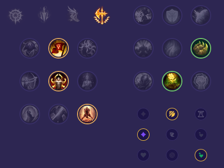

Starter: Pierścień Dorana 2x Mikstura Zdrowia Core Bulid: Kryształowy Kostur Rylai Pancerniaki Szczelinotwórca Full Bulid: Udręka Liandriego Oblicze Ducha Kolczasta Kolczuga

Słaby przeciwko: - Ornn - Renekton - Kayle - Nasus - Aatrox - Garen Dobry przeciwko: - Malphite - Sett - Gangplank - Illaoi - Jax - Sion